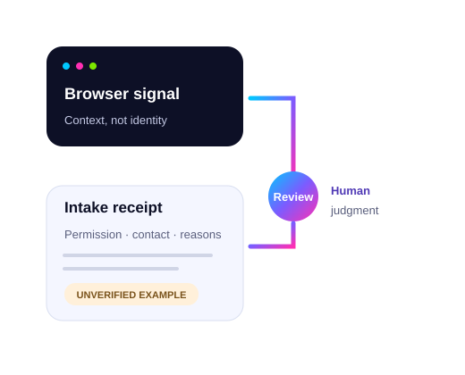

Local signals + explicit permission
Browser hints, an optional location request, error-specific recovery and fictional review receipts. No live lead collection, hidden fingerprinting or new trackers.
Better intake starts before the handoff
Lead verification · A working demonstration
Your intake team needs a person it can reach, a clear record of permission, and a reason to trust the handoff. Here’s what the web can show—and what still needs checking.
Try the browser demonstration ↓Built by Kyle. Adapted from This Is What the Web Sees. This is evidence of a demonstration, not proof that false leads are solved.

01 / What this visit actually shows
These basic hints are read locally when this page loads. They are not combined into a fingerprint or sent to an intake system.
A browser-reported hint; it can be reduced, changed or spoofed.
A browser setting, not nationality or identity.
The current window size, not a unique device identifier.
Local display time, not evidence of a person’s location.
No IP address is looked up or displayed in this demo. A site’s host normally receives a network address when serving a page. An IP lookup can sometimes suggest a broad region, but it does not reveal GPS coordinates or establish who submitted a lead.
VPNs, shared office or household IPs, mobile routing and geolocation errors all matter. A mismatch is a question for review, not automatic proof of fraud.
Only when you press the button will this page ask your browser for location. If allowed, latitude, longitude and the browser’s reported accuracy appear here. The browser or operating system may use its own location services.
This page sends no coordinates to LFMA, an external map, or an intake endpoint. It does not save them. The values remain in this page’s memory until cleared or you leave. Normal hosting logs may still record the page request.
Location is optional. It neither verifies identity nor decides legal eligibility. Sensitive health or injury history must not be used as a spam or eligibility shortcut.
Not requested. You can skip this test.
02 / The process we would validate with your firm
The goal: fewer unverified records entering intake, with receipts your team can trace. These are intended workflow steps, not a claim that every check is deployed.
Keep a source reference, timestamp and the specific permission for the next step. Browser context can support review; it cannot certify a human.
Look for repeated submissions and implausible patterns. A fast completion or unusual device is not enough to reject someone. Give uncertain records a human review path.
Confirm that the person can be reached through an agreed contact method. Compare records with a defined duplicate window and review repeat inquiries before suppressing them. Format checks alone do not prove contact ownership.
Keep the check reasons, permission and intake acknowledgement connected to the same reference. The firm separately reports contact, acceptance, signed case and collected revenue. Each is a different outcome.
03 / Review a handoff example
Choose a fictional record to see the intended review decision. These examples run locally; they do not run contact validation or duplicate detection.
04 / The evidence boundary
Browser hints, an optional location request, error-specific recovery and fictional review receipts. No live lead collection, hidden fingerprinting or new trackers.
The existing LFMA order adapter validates required fields and email format, carries a submission reference and waits for a readable acknowledgement. It guards repeat sends within the mounted form.
That is buyer-order handling, not verified consumer lead filtering. Browser checks can be bypassed; the guard is not server-side deduplication. The MVA sprint is also a synthetic demo.
No verified spam-reduction rate or production filtering results are provided for this demonstration. Contact ownership, behavior review and cross-record duplicate checks still need implementation evidence and outcome validation.
To prove improvement: define false leads, audit before and after with comparable sources, review mistaken rejections, and connect intake decisions to firm-reported outcomes.

We’ll map what needs verifying, who reviews exceptions, and what receipt your firm needs before a lead reaches intake.
Discuss your verification workflow with Kyle →This takes you to LFMA’s existing contact form. No test results or coordinates are passed along.